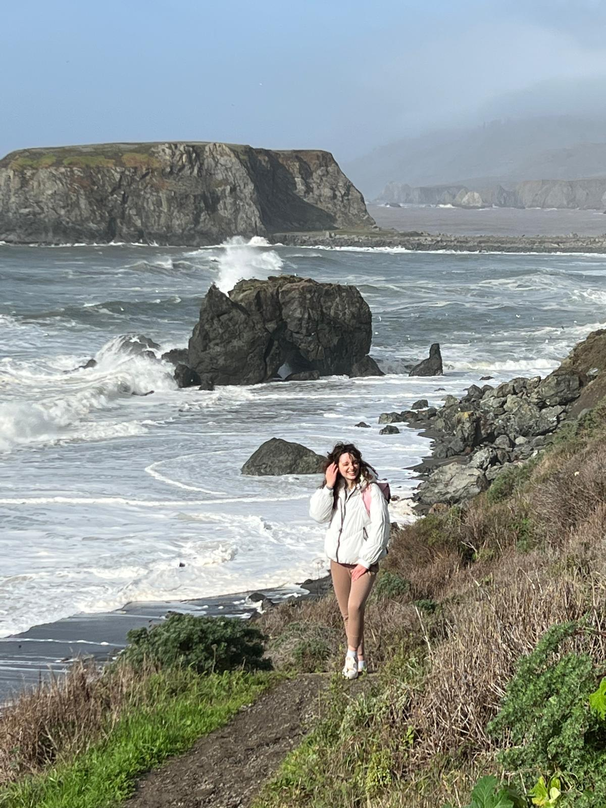
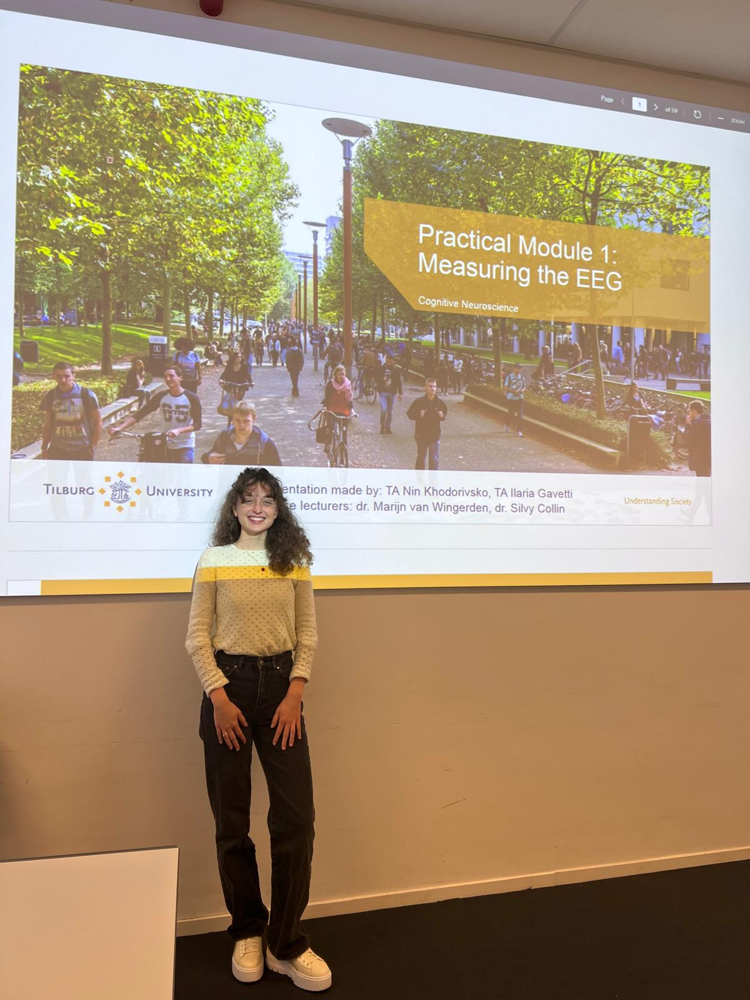
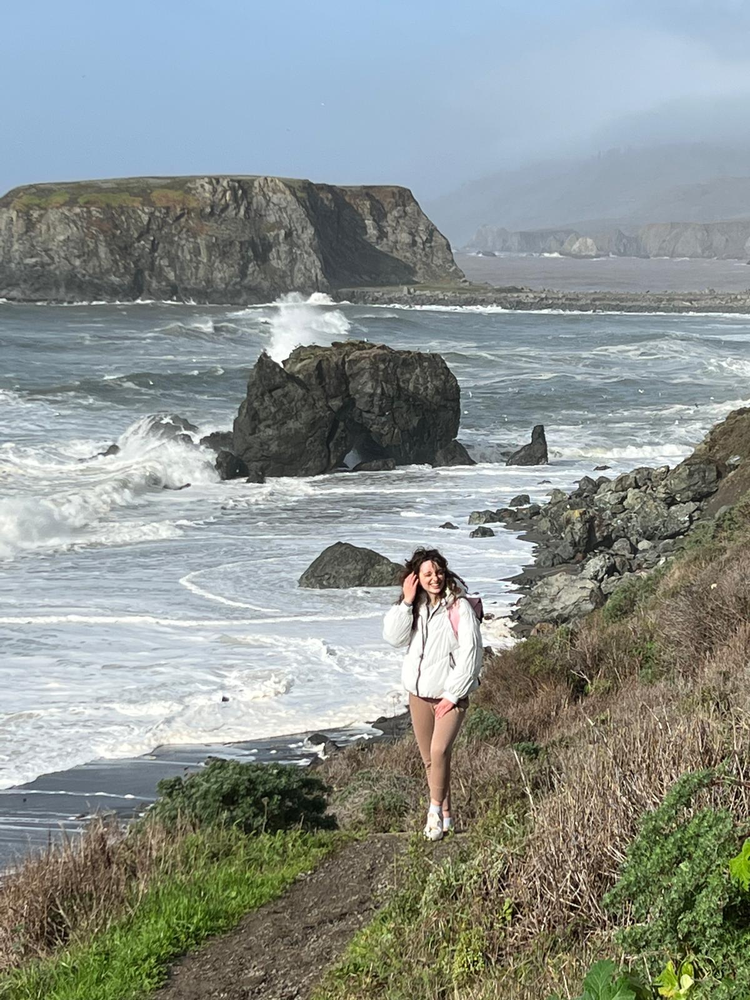
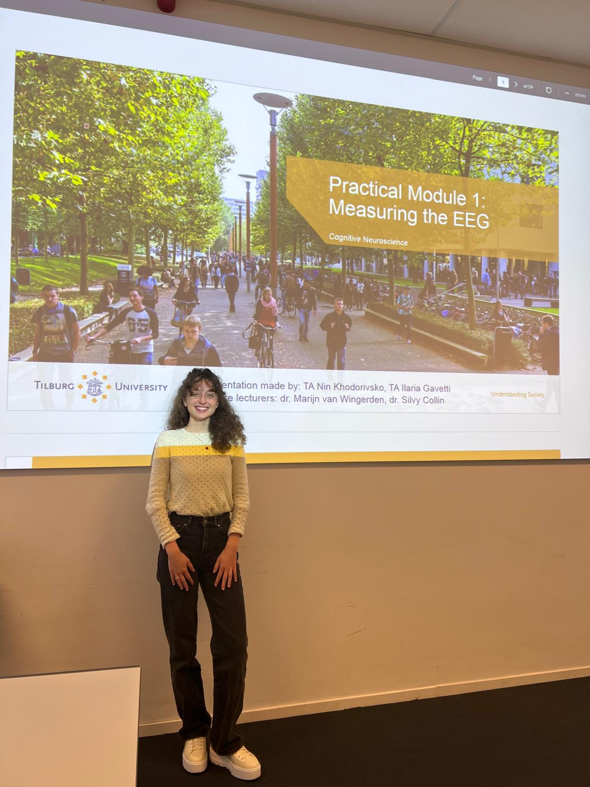

Why I Would Make a Strong PhD Candidate
My academic journey includes courses from leading experts in the field:
- Python Programming: Prof. dr. ir. Pieter Spronck
- Computer Vision: Prof. dr. Eric Postma
- Neural Cognitive Modeling: Dr. Raquel Garrido Alhama and Dr. Willem Zuidema
- Neuroimaging: Dr. Steven Scholte and Dr. Joe Bathelt
My focus has been on applying theoretical knowledge to real-world problems, developing practical skills in Python coding, machine learning, and computational modeling. I am proactive, adaptable, and enjoy planning and organizing to ensure progress, qualities that I believe are crucial for a successful PhD journey.
Impact of My Research Master's Degree
My Research Master’s program has deeply prepared me for a PhD by providing hands-on research experience, interdisciplinary exposure, and involvement in academic publications. Some key highlights include:
- Research Projects: Throughout my Master's, I completed several research projects such as developing interpretable models for high-dimensional EEG data and exploring functional-genetic models of zebrafish brains. These projects have honed my skills in data analysis, computational modeling, and the interdisciplinary integration of neuroscience and AI.
- Literature Thesis: I authored a comprehensive literature thesis on self-supervised learning in brain data analysis, which involved extensive research and critical analysis, helping me solidify a deep understanding of both theoretical and practical challenges in neuroscience research.
- Interdisciplinary Approach: The program has equipped me with the ability to work at the intersection of neuroscience, AI, and cognitive science, ensuring a well-rounded approach to problem-solving.
- Extracurricular Activities: I actively contributed to the ABS Journal, where I reviewed papers and collaborated with researchers from various domains, further enhancing my academic writing and peer-reviewing skills.
These experiences have provided me with the necessary tools and knowledge to excel in a PhD program, and I am eager to contribute to groundbreaking research in the field of computational neuroscience.
 


